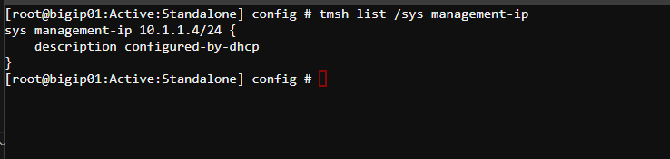
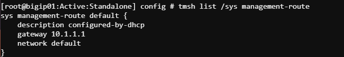
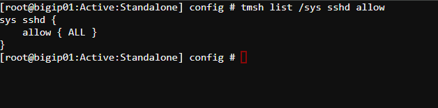
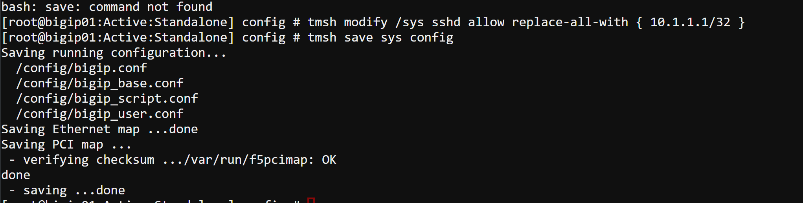
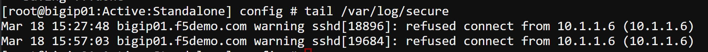
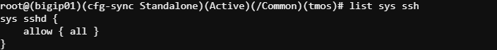
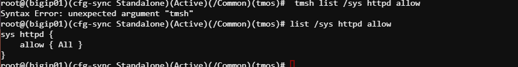
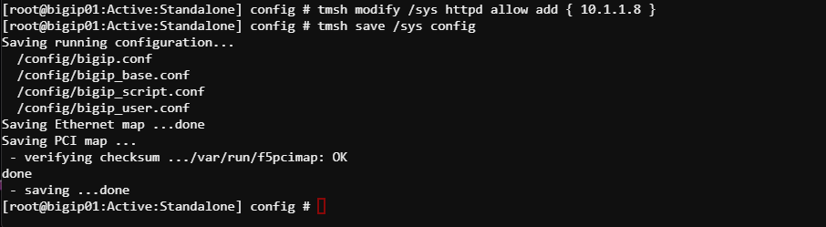
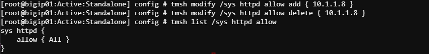

Unofficial - F5 Certification Exam Prep Material > Symposium 2026 - BIG-IP Administrator: Source | Edit on
Lab 9: BIG-IP LTM Management Interface
This lab is designed to teach students about the BIG-IP LTM (Local Traffic Manager) Management interface and its various configurations and access control settings. Students will gain hands-on experience to better understand management IP functionalities, connectivity, and the security settings associated with it. The lab consists of step-by-step instructions, covering each of your objectives.
Lab instructions
This lab will use BIG-IP 01 and the Jumpbox. Students will execute TMSH commands in the Web Shell of BIG-IP 01. Afterwards, the students will test access on the Jumpbox.
Note
There are three methods add, delete, and replace-all-with for managing SSHD and HTTPD.
Objective 1: Identify the Configured Management-IP Address
Access the Web Shell for BIG-IP 01
Find the Management-IP:
tmsh list /sys management-ip

Alternatively, check via the GUI:
Navigate to
System > Platformand note the Management IP Address.
Note
We are using DHCP; therefore, IP address is not visible via the Config Utility
Find the Management-Route:
tmsh list /sys management-route



Objective 2: SSHD ACLs (Access Control Lists)
Check Current SSH Access Control:
tmsh list /sys sshd allow

Allow Access from the address 10.1.1.1(UDF IP Address):
tmsh modify /sys sshd allow replace-all-with { 10.1.1.1/32 } tmsh save /sys config

Test connectivity from the Jumpbox:
- ssh root@10.1.1.4
- Verify that SSH connections from Jumpbox IP is denied.
tailf /var/log/secure

Cleanup
tmsh modify /sys sshd allow replace-all-with { ALL }



Objective 3: HTTPD ACLs
Check Current HTTP Access Control:
tmsh list /sys httpd allow

Modify HTTP Access Control Settings to allow access from 10.1.1.1(UDF IP Address):
tmsh modify /sys httpd allow replace-all-with { 10.1.1.1/32 } tmsh save /sys config

Verify Access Control:
- Attempt logging into the Config Utility from the Jumpbox.
- Verify that HTTP connections from other IPs are denied.
tailf /var/log/secure
Cleanup
tmsh modify /sys httpd allow replace-all-with { ALL } tmsh list /sys httpd allow



Objective 4: Explain Management IP Connectivity Issue
Unreachability Scenarios:
- Discuss common reasons for Management IP connectivity issues:
- Firewall blocking access to Management-IP.
- Wrong subnet mask or gateway configuration on the BIG-IP.
- Device is on a different VLAN or broadcast domain.
- SSH/HTTP services are disabled or access control limits are in place.
- Discuss common reasons for Management IP connectivity issues:
Troubleshoot Connectivity Issues:
Ping Test: Verify if the Management IP is reachable using:
ping <management IP>
Use the tcpdump utility on BIG-IP to monitor incoming connection requests on the management interface:
tcpdump -ni mgmt port 22 or port 443
Lab Conclusion
By the end of this lab, students should:
- Understand and modify the Management IP address settings.
- Demonstrate remote connectivity to the BIG-IP system.
- Be able to troubleshoot Management IP connectivity issues.
- Configure SSH and HTTP/HTTPS access lists (ACLs) for the Management interface.
- Differentiate between improper and secure configurations for Management access.
Cleanup Tasks
Revert any changes you made to the ACLs during the lab:
tmsh modify /sys sshd allow replace-all-with { ALL } tmsh modify /sys httpd allow replace-all-with { ALL } tmsh save /sys config
Validate that the Management IP is accessible as per the lab’s original configuration.